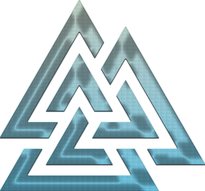

ALUX Programming Guidelines
This book is a guide to writing programs by defining their meaning first and their mechanics second.
Inspired by Conal Elliott’s Denotational Design, it treats computation as a clear mathematical object rather than an opaque sequence of steps.
Specifications are expressed as simple, compositional traits that describe what a program is. Implementations provide interchangeable ways to realise those meanings.
The result is software that is easier to reason about, naturally composable, and correct by construction.
How to Read This Book
This book blends theory and practice. You will see each concept from two perspectives:
- Concepts — core ideas expressed clearly and precisely, independent of language or framework.
- Insights — deeper connections between concepts, with examples, design patterns, and transformations.
The examples are often in Rust but the principles are language-agnostic.
Who This Book Is For
- Programmers who want to design for meaning rather than just mechanics.
- Developers seeking to connect category theory, type systems, and program design.
- Readers curious about how ideas like Free Monads, CPS, Defunctionalization, and Dependent Types fit together.
Operational Semantics
Definition
Operational semantics defines the meaning of programs by specifying how they execute step by step. It models program execution as transitions between configurations - abstract states containing program fragments, environments, or memory.
Styles of Operational Semantics
Small-step (Structural Operational Semantics)
Computation is broken into atomic transitions:
(2 + 3) → 5
(2 + 3) * 4 → 5 * 4 → 20
Useful for modeling concurrency, interleaving, and partial execution.
Big-step (Natural Semantics)
Describes evaluation in terms of final results:
(2 + 3) * 4 ⇓ 20
Often clearer for reasoning about terminating programs.
Formal Rules
Operational semantics is typically given with inference rules.
For a simple arithmetic language:
Expr ::= n | Expr + Expr
We can write:
n1 + n2 → n3 (where n3 = n1 + n2)
Evaluation trace:
(1 + 2) + 3 → 3 + 3 → 6
Why It Matters
- Provides a precise machine-like model of execution.
- Foundation for interpreters and virtual machines.
- Supports reasoning about correctness, resource use, and safety.
Relation to Other Concepts
- Free Monad: Encodes operational rules as an AST of instructions.
- CPS: Makes control flow explicit by turning "rest of the program" into a continuation.
- Defunctionalization: Turns continuations into explicit state transitions, directly resembling operational semantics.
- Dependent Types: Can enrich operational rules with proofs (e.g., stack safety, gas bounds).
In Practice
Operational semantics is how interpreters are built:
- The EVM can be viewed as a large-step state transition system.
- Small-step rules directly resemble
matcharms in a Rust interpreter.
(n1 + n2) → n3
can be read as Rust code:
#![allow(unused)] fn main() { match expr { Add(Box::new(Num(n1)), Box::new(Num(n2))) => Num(n1 + n2), _ => expr, } }
To think about
Thinking about programming in operational ways or using an imperative style—even with a proof—does not enable us to gain deep insights
Operational thinking (implementation first) prevent us to express and improve ideas
Free Monad
1. What is a Free Monad (Rust version)
A free monad lets you:
- Describe a program as data - not by running it right away.
- Interpret that program later in one or more ways.
Think of it as:
An AST of effectful operations +
bind/flat_mapto chain them.
You split:
- Syntax → enum of instructions.
- Semantics → interpreter function.
“Free” means you can build a monad from any functor (F) without committing to meaning.
2. Rust Implementation
Free Monad type
#![allow(unused)] fn main() { #[derive(Clone)] enum Free<F, A> { Pure(A), Suspend(F), FlatMap(Box<Free<F, A>>, Box<dyn Fn(A) -> Free<F, A>>), } impl<F: Clone + 'static, A: 'static> Free<F, A> { fn pure(a: A) -> Self { Free::Pure(a) } fn flat_map<B: 'static, G>(self, f: G) -> Free<F, B> where G: Fn(A) -> Free<F, B> + 'static, F: 'static, { match self { Free::Pure(a) => f(a), Free::Suspend(op) => { Free::FlatMap(Box::new(Free::Suspend(op)), Box::new(f)) } Free::FlatMap(inner, g) => { Free::FlatMap(inner, Box::new(move |x| g(x).flat_map(f.clone()))) } } } } }
DSL: Console operations
#![allow(unused)] fn main() { #[derive(Clone)] enum Console<A> { Print(String, A), ReadLine(fn(String) -> A), } // Smart constructors fn print_line(s: &str) -> Free<Console<()>, ()> { Free::Suspend(Console::Print(s.to_string(), ())) } fn read_line() -> Free<Console<String>, String> { Free::Suspend(Console::ReadLine(|input| Free::Pure(input))) } }
Interpreter
#![allow(unused)] fn main() { fn run_console<A>(mut prog: Free<Console<A>, A>) -> A { loop { match prog { Free::Pure(a) => return a, Free::Suspend(Console::Print(s, next)) => { println!("{}", s); prog = Free::Pure(next); } Free::Suspend(Console::ReadLine(f)) => { let mut buf = String::new(); std::io::stdin().read_line(&mut buf).unwrap(); prog = f(buf.trim().to_string()); } Free::FlatMap(inner, cont) => match *inner { Free::Pure(a) => prog = cont(a), Free::Suspend(op) => prog = Free::Suspend(op), // minimal handling _ => unimplemented!(), }, } } } }
Usage
fn main() { let program = print_line("What is your name?") .flat_map(|_| read_line()) .flat_map(|name| print_line(&format!("Hello, {name}!"))); run_console(program); }
3. Takeaway
- Syntax =
enum Console(possible instructions) - Program =
Free<Console, A>(data describing steps) - Semantics =
run_console(interpreter) - Benefit: You can write multiple interpreters for the same program — e.g., run in real IO, log to a file, or compile to another language.
Correlation to Continuations and CPS
Continuation-Passing Style (CPS) is a way of writing programs where functions never return values directly but instead pass results to another function (the continuation) that represents “the rest of the program.”
A free monad is basically a program as a sequence of steps, where each step says:
"Do this, then continue with the rest."
That “rest of the program” is exactly a continuation — a function from the current result to the next step.
-
In our Rust free monad:
#![allow(unused)] fn main() { Free::FlatMap(Box<Free<F, A>>, Box<dyn Fn(A) -> Free<F, A>>) }the
Box<dyn Fn(A) -> Free<F, A>>is the continuation. -
When you interpret a free monad, you are running in CPS:
- Instead of returning values directly, you pass them into the next continuation.
- You end up in a loop of:
current_instruction -> feed result into continuation -> next instruction
-
CPS relation:
- Free monads encode CPS in a data structure.
- CPS is the runtime control flow representation of the same idea.
Quick mapping:
| Concept | In CPS | In Free Monad AST |
|---|---|---|
| Step result | Argument to continuation | A in Fn(A) -> Free |
| Continuation | Function (A) -> R | Box<dyn Fn(A) -> Free> |
| Program | Nested continuations | Nested FlatMap variants |
| Execution | Calling functions | Pattern matching + calling |
GoF Design Patterns Mapping
Free monads are not in GoF because they’re from functional programming theory, but they subsume or emulate several patterns:
| GoF Pattern | How Free Monad Relates |
|---|---|
| Interpreter | The whole “AST + run” is literally Interpreter pattern — free monads just give you the AST + combinators for free. |
| Command | Each enum variant in the DSL is a Command object. The free monad chains them like a macro-command. |
| Composite | The AST structure (nested instructions) is a Composite of commands. |
| Builder | The .flat_map chain is a fluent builder for programs. |
| Visitor | The interpreter is essentially a visitor over the instruction set. |
Why Free Monad > These Patterns
-
GoF patterns are manual OOP work - you define interfaces, classes, and compose them.
-
Free monads are algebraic - you define data for instructions and functions to interpret them.
-
You automatically get:
- Sequencing (
flat_map) - Composition
- Multiple interpreters without touching core logic
- Sequencing (
Summary Table:
| Free Monad FP concept | Equivalent GoF/OOP pattern |
|---|---|
| Instruction enum | Command |
| Program AST | Composite |
flat_map builder | Builder |
| Interpreter fn | Interpreter / Visitor |
| Multiple interpreters | Strategy |
Relation to Defunctionalization
Defunctionalization is a program transformation that replaces higher-order functions with a first-order data structure that represents the possible functions, plus an interpreter that applies them.
In CPS, continuations are higher-order functions. Defunctionalizing a CPS program replaces those continuations with an enum of continuation cases and an apply function to run them.
A free monad can be seen as the result of defunctionalizing the continuations inside a CPS-transformed program:
- Start with a CPS version of your program. The "rest of the program" is carried in continuation functions.
- Defunctionalize those continuation functions into a finite set of cases in a data type.
- The resulting data type, together with the initial instruction set, is exactly the AST of a free monad.
Key similarities
- Both free monads and defunctionalization produce a data representation of computation and require an interpreter to give meaning to that data.
- The
FlatMapcase in a free monad holds the continuation; defunctionalization replaces that closure with a case in a data type.
Key differences
| Aspect | Defunctionalization | Free Monad |
|---|---|---|
| Purpose | Mechanical compiler technique to remove higher-order functions | Algebraic construction to separate syntax from semantics |
| Input | Any higher-order program, often in CPS form | A functor F describing possible instructions |
| Output | Enum of function cases plus apply function | Free<F, A> AST plus interpreters |
| Monad? | Not necessarily | Always a monad by construction |
| Scope | General transformation | Specific functional programming pattern |
Summary Defunctionalization is a transformation technique. Free monads are a reusable design pattern. The free monad structure is what you get when you defunctionalize the continuations in a CPS program built from a functor F.
Continuation-Passing Style (CPS)
Definition
Continuation-Passing Style (CPS) is a way of writing programs where functions do not return values directly. Instead, they pass their result to another function called a continuation, which represents the rest of the program.
Motivation
- Makes control flow explicit and programmable.
- Enables advanced transformations such as non-blocking IO, early exits, coroutines, backtracking, and concurrency scheduling.
- Used in compiler intermediate representations to simplify optimization and analysis.
Basic Form
In direct style:
fn add_one(x: i32) -> i32 { x + 1 } fn main() { let y = add_one(41); println!("{}", y); }
In CPS:
fn add_one_cps(x: i32, k: impl Fn(i32)) { k(x + 1) } fn main() { add_one_cps(41, |y| { println!("{}", y); }); }
Here, k is the continuation. Instead of returning x + 1, we call k(x + 1).
Key Properties
- All function calls are tail calls to continuations.
- The current computation never "returns" to the caller; instead it jumps into the continuation.
- Control flow becomes explicit in the program.
Relation to Higher-Order Functions
- In CPS, continuations are just higher-order functions.
- Each step of the computation receives a continuation representing what to do next.
Relation to Defunctionalization
- In CPS, the continuation is an actual function value.
- Defunctionalization replaces the continuation function with a data structure (enum) that represents possible next steps, plus an
applyfunction to interpret them.
Relation to Free Monads
- The
FlatMapconstructor in a free monad is exactly a stored continuation. - Interpreting a free monad is like executing CPS code where the continuation is part of the program data.
- Free monads can be obtained by taking CPS code and defunctionalizing the continuations.
Advantages
- Flexible control flow representation.
- Easier to reason about evaluation order.
- Powerful for implementing interpreters, debuggers, optimizers, and async runtimes.
Disadvantages
- Verbose compared to direct style.
- Can be harder to read for humans.
- Requires tail call optimization for efficiency in languages without native support for it.
Defunctionalization
Definition
Defunctionalization is a program transformation that replaces higher-order functions with a first-order data structure that represents the possible functions, plus an interpreter function that applies them.
Motivation
Some languages, compilers, or runtimes cannot handle higher-order functions efficiently or at all. By defunctionalizing, you make the program purely first-order, which is easier to compile, analyze, serialize, or run in restricted environments.
The Process
- Identify all possible higher-order functions that may be created and passed around.
- Assign each such function a unique tag in an enum or sum type, along with any data it needs to operate.
- Replace function values with these tags.
- Define an
applyfunction that takes a tag and the function arguments, then pattern matches on the tag to run the correct code.
Example in Rust
Before: using a closure
#![allow(unused)] fn main() { let k: Box<dyn Fn(i32) -> i32> = Box::new(|x| x + 1); println!("{}", k(41)); }
After: defunctionalized form
#![allow(unused)] fn main() { enum Cont { Add1 } fn apply(c: Cont, x: i32) -> i32 { match c { Cont::Add1 => x + 1, } } println!("{}", apply(Cont::Add1, 41)); }
Properties
- All functions are now represented by simple data.
- The program becomes purely first-order.
- The
applyfunction replaces direct function calls.
Applications
- Compiler backend simplification: many compilers generate CPS code and then defunctionalize it.
- Serialization of functions: you can send the enum tag over a network or store it in a file.
- Static analysis: first-order code is easier to reason about.
- Derivation of interpreters: defunctionalization naturally leads to an interpreter pattern.
Relation to CPS
In CPS (continuation-passing style), continuations are higher-order functions. Defunctionalizing CPS code turns these continuations into a finite set of cases in an enum plus an apply function.
Relation to Free Monads
A free monad can be seen as the result of defunctionalizing the continuations in a CPS-transformed program. The resulting data structure is the free monad's AST, and the apply function is the interpreter.
Dependent Types
Definition
A type system is called dependent when types can depend on values. This means that the shape, constraints, or meaning of a type may be parameterized by program values. With dependent types, you can express rich invariants and relationships directly in the type system.
Examples
Vec<n, T>- a vector type indexed by its lengthnMatrix<rows, cols, T>- dimensions encoded in the typeProof<p>- a type representing a proof of a propositionp
For instance, in a language with dependent types:
append : Vec<n, T> -> Vec<m, T> -> Vec<n + m, T>
The type says that appending two vectors produces a vector whose length is the sum of the lengths.
Purpose
- Capture invariants in the type system so they are checked at compile time
- Reduce or eliminate certain classes of runtime errors
- Allow programs to carry proofs of their own correctness
- Enable more expressive APIs where type signatures encode precise behavior
Key Characteristics
- Types are computed: Types can be expressions evaluated from program values
- Terms appear in types: No strict separation between values and types
- Type checking may evaluate code: The compiler may need to run computations to verify type constraints
- Expressiveness: Can model proofs, exact sizes, state transitions, or logical conditions
Dependent Function Types
A dependent function type is written (in type theory notation) as:
Π x : A. B(x)
This means: for each value x of type A, the result type is B(x) which may depend on the value of x.
In programming terms:
-
Non-dependent function:
f : A -> BThe output type
Bis fixed regardless of the input value. -
Dependent function:
f : (x : A) -> B(x)The output type varies based on the actual input
x.
In Practice
-
Fully supported in Agda, Idris, Coq, Lean
-
Rust supports restricted forms via const generics and trait bounds
-
Commonly used for:
- Exact-size arrays and matrices
- State machines with type-level states
- Encoding logical proofs alongside code
Branching and Confluence
We encounter branching constantly in everyday life. Imagine:
- You wake up and decide: ☕ coffee or 🍵 tea.
- If coffee: sugar or no sugar?
- If tea: green or black?
Each decision branches into alternatives, like a little decision tree. But in the end, you don’t live in two universes — you end up with one drink in your hand. That’s confluence: although choices branch, they merge back into one reality.
Branching in Rust Programs
The same pattern appears in programs. A sequential program may branch internally, but execution always continues as a single flow.
if
#![allow(unused)] fn main() { fn sign(x: i32) -> i32 { if x > 0 { 1 } else if x < 0 { -1 } else { 0 } } }
- Branching: program splits into one of three paths.
- Confluence: for a given input value, the same branch condition will always be chosen. Each input deterministically follows exactly one path, and evaluation of conditions happens in a fixed order (first check
x > 0, thenx < 0, else default). Regardless of which path is taken, the result is always determined from the input, and execution continues in a single, unified flow.
match
#![allow(unused)] fn main() { fn day_type(day: &str) -> &str { match day { "Saturday" | "Sunday" => "Weekend", "Monday" | "Tuesday" | "Wednesday" | "Thursday" | "Friday" => "Weekday", _ => "Unknown", } } }
- Branching: many alternatives.
- Confluence: for a given input value, the program deterministically selects exactly one matching branch. The essential property is that the trace of evaluation is deterministic: the same input always leads down the same path. In this simple example each branch yields the same type (
&str), but even in settings with dependent types—where result types vary with input—the execution remains confluent because identical inputs always produce the same path and outcome.
Loops with Early Exit
#![allow(unused)] fn main() { fn find_even(nums: &[i32]) -> Option<i32> { for &n in nums { if n % 2 == 0 { return Some(n); // branch: exit early } } None // confluence: reached if loop completes } }
- Branching: may exit during iteration.
- Confluence: one thread of control — either returns early or finishes and continues.
Sequential Confluence Illustrated
Start
├─ branch A → ...
└─ branch B → ...
↘
Confluence → continues as one flow
Just like your morning drink decision, a program doesn’t split into parallel worlds. Branches are local alternatives, but sequential confluence ensures only one actual path is taken, and execution rejoins into one future.
⚡ Key idea: Branching explores alternatives, confluence merges them back. In sequential programs, confluence is guaranteed: there’s always one final thread of execution.
Confluence Beyond Determinism
Confluence is often explained as the guarantee that the same input always produces the same output. But its essence is deeper: the trace of evaluation itself is deterministic. This means the path through the program is uniquely determined by the input, independent of external factors. In Rust, both if and match enforce deterministic traces. More broadly, confluence is what allows reasoning about programs algebraically, since the same input always reduces in a predictable way.
Trace Equivalence
Trace equivalence means that two programs, given the same input, follow evaluation paths that yield the same observable behavior: the same result and the same observable effects. In pure code (no effects), this reduces to producing the same result for all inputs. With side effects, equivalence also requires that the same conditions are evaluated in the same order.
Example of not trace‑equivalent (side effect changes trace):
#![allow(unused)] fn main() { fn is_admin() -> bool { println!("checked admin"); // side effect true } fn is_user() -> bool { println!("checked user"); // side effect true } fn classify_role(x: i32) -> &'static str { if is_admin() { "admin" } else if is_user() { "user" } else { "other" } } }
Here both is_admin and is_user return true, so the result is always "admin". But the trace differs: if is_admin is checked first, only that prints; if conditions are reordered, is_user prints instead. The outcome is the same, but the traces differ, so the programs are not trace‑equivalent.
Trace‑equivalent reorder (pure, disjoint, total):
#![allow(unused)] fn main() { fn classify_a(x: i32) -> &'static str { if x < 0 { "neg" } else if x == 0 { "zero" } else { "pos" } } fn classify_b(x: i32) -> &'static str { if x == 0 { "zero" } else if x < 0 { "neg" } else { "pos" } } }
The predicates are disjoint and cover all integers; both versions return the same label for every input. With no side effects, these are trace‑equivalent.
Bridge to Trees
Branching in programs naturally connects to tree structures. A sequence of decisions can be visualized as a decision tree: each internal node is a branching point, and each leaf is a possible outcome. Restricting to two alternatives at each branch gives binary trees, which are a cornerstone of computer science. This perspective shifts branching from a control-flow mechanism into a structural representation of possibilities.
Conal Elliott has described memory addressing as a kind of perfect binary leaf trees, where each memory cell corresponds to a leaf reached by a sequence of left/right choices. This view links the abstract branching structure of programs to the very way data is organized and accessed.
Bridge to Semantics
Confluence is also a fundamental property in programming language semantics. In lambda calculus, for example, the Church–Rosser theorem states that if an expression can be reduced in different ways, all reduction paths will converge to a common result. This reflects the same guarantee as sequential confluence in Rust: different branches don’t lead to diverging realities but ultimately rejoin into one meaning. This bridge from everyday branching to formal semantics helps build intuition for deeper topics in programming theory.
Bridge to Bisimulation
Another important concept related to branching is bisimulation, used in process calculi and concurrency theory. Two systems are bisimilar if they can simulate each other’s steps: whenever one makes a move, the other can make a corresponding move, and the resulting states remain related. Unlike simple trace equivalence, bisimulation is sensitive to the structure of branching, not just final results. It ensures that two programs behave the same way under every possible interaction, making it a powerful tool for reasoning about equivalence in concurrent and interactive systems.
There are different flavors of bisimulation:
- Strong bisimulation – requires that every single step of one process can be matched by an identical step in the other, including internal or invisible actions.
- Weak bisimulation – abstracts away from internal or silent actions (often denoted τ). Two systems can be weakly bisimilar if they match on observable behavior, even if one performs extra internal steps.
- Branching bisimulation – a refinement of weak bisimulation that preserves the branching structure more carefully: even when ignoring internal actions, the branching points must align so that the choice structure is respected.
These distinctions are crucial in concurrency theory: strong bisimulation is very strict, weak bisimulation allows flexibility with internal computation, and branching bisimulation balances the two by maintaining the essential shape of choices while abstracting from unobservable details.
Confluence and Bisimulation Compared
Although confluence and bisimulation both deal with branching and outcomes, they apply in different contexts:
- Confluence is about deterministic evaluation: for the same input, all reduction paths lead to the same result. It is mainly used in sequential semantics (e.g., lambda calculus) to prove consistency and simplify reasoning.
- Bisimulation is about behavioral equivalence between two possibly concurrent systems: whenever one system can make a step, the other can match it. It is mainly used in process calculi and concurrency theory to establish that two processes behave the same under all possible interactions.
In short:
- Confluence → guarantees one meaning for each program.
- Bisimulation → guarantees two programs mean the same in terms of behavior.
These notions complement each other: confluence helps ensure determinism in sequential computation, while bisimulation provides a robust notion of equivalence in concurrent or interactive computation.
Operational Semantics in Context
Why Operational Semantics Matters
Operational semantics gives us the step-by-step execution model of a language.
In ALUX, this plays a central role: it is the bridge between abstract meaning and concrete mechanics.
Connection to Free Monads
A free monad describes a program as an AST of instructions.
Interpreting this AST is essentially applying operational semantics:
- Free monad: syntax of instructions + sequencing
- Operational semantics: rules that define how each instruction steps
Thus, an interpreter for a free monad is exactly an operational semantics defined as code.
Connection to CPS
Continuation-Passing Style (CPS) makes the rest of the computation explicit.
Operational semantics can be expressed in CPS:
- Small-step rules correspond to continuations being applied after each instruction.
- The operational machine is just a CPS interpreter in which the continuation is made first-class.
This shows how CPS makes operational semantics executable.
Connection to Defunctionalization
Defunctionalization takes CPS continuations and replaces them with explicit state transitions.
This is precisely what operational semantics rules are:
- Continuation-as-function → State-transition-as-data
- Apply function → Pattern match on instruction + next state
The result is a transition system that matches the structure of operational semantics directly.
Real Example: The EVM
The Ethereum Virtual Machine (EVM) can be understood operationally:
- State: program counter, stack, memory, storage, gas
- Transition rules: one for each opcode (
ADD,PUSH,SSTORE, etc.) - Execution: repeatedly apply small-step rules until halting
In ALUX terms:
- The EVM bytecode is a defunctionalized free monad program.
- The EVM interpreter is its operational semantics.
Dependent Types as Enriched Semantics
Dependent types can enrich operational semantics with proofs:
- Stack safety:
poponly valid if stack depth > 0 - Gas constraints: program type encodes available gas and its consumption
- Resource invariants: state transitions guaranteed by types
This turns operational semantics from rules for execution into proofs of correctness.
Summary
- Operational semantics is the execution model of programs.
- Free monads encode the same idea as syntax + sequencing.
- CPS and defunctionalization provide mechanical ways to express operational semantics.
- Real systems like the EVM are defunctionalized operational semantics in practice.
- Dependent types elevate semantics into proof-carrying computations.
EVM as a Virtual Machine
The Ethereum Virtual Machine (EVM) is a stack-based virtual CPU that executes Ethereum bytecode. This bytecode is the compiled form of Ethereum smart contracts, usually written in Solidity, Vyper, or another EVM-compatible language.
At the lowest level:
-
The EVM processes opcodes (ADD, PUSH, JUMP, SSTORE, etc.).
-
Execution state includes:
- Stack: LIFO data stack for operand storage.
- Memory: transient byte array for temporary values.
- Storage: persistent key-value store for each contract.
- Program counter: points to the next opcode.
- Gas: metering system that charges for execution steps.
EVM as an Interpreter Pattern
From the free monad and GoF design patterns perspective:
- Instruction Set = EVM opcodes (similar to your
enum Console). - Program AST = Actually, EVM code is already compiled, so it’s a flat sequence of instructions, not a rich high-level AST. High-level languages like Solidity first have a compiler that builds an AST, optimizes it, and then emits EVM bytecode.
- Interpreter = The EVM specification defines how each opcode changes the machine state.
- Multiple interpreters = While the EVM spec is fixed, different clients (Geth, Nethermind, Besu, Erigon) are alternative implementations of the same interpreter.
In GoF terms:
- The EVM is an Interpreter over an instruction language (bytecode).
- Opcodes are Command objects executed in sequence.
- The program state (stack, memory, storage) acts like the context in Interpreter pattern.
EVM and Free Monad Analogy
If we model the EVM in a free monad style:
-
Syntax: Enum of opcodes with parameters, e.g.
#![allow(unused)] fn main() { enum EvmInstr<A> { Add(A), Push(U256, A), SStore(U256, U256, A), // ... } } -
Program:
Free<EvmInstr, ()>would represent an abstract Ethereum program before compilation. -
Semantics: Interpreter function that executes these instructions against the EVM state.
The difference:
- The real EVM executes a linear bytecode sequence (already defunctionalized into an array of low-level instructions).
- A free monad version would allow you to build programs algebraically, chain them with
flat_map, and then interpret or compile them into EVM bytecode.
EVM and CPS / Defunctionalization
The EVM’s real execution loop is very similar to a defunctionalized CPS interpreter:
- In CPS: “do instruction, then call continuation”.
- In EVM: “execute opcode, then increment program counter” is equivalent to applying the continuation for that instruction.
- Defunctionalization: The “continuations” are already turned into a position in bytecode (program counter). This is the tag identifying the next action.
- The interpreter (
switchormatchon opcode) is theapplyfunction of the defunctionalized continuations.
So:
- CPS form: Smart contract execution as “do opcode → continuation”.
- Defunctionalized form: Replace continuations with
pc+ bytecode array. - Free monad form: Build higher-level EVM programs before compiling them into the defunctionalized form.
Key Insight
EVM execution = defunctionalized CPS interpreter for Ethereum bytecode.
| Concept | Free Monad World | EVM Reality |
|---|---|---|
| Instruction type | Enum of opcodes | Fixed EVM opcodes |
| Program representation | AST built from Free<F, A> | Linear bytecode array |
| Continuation | Closure in FlatMap | Program counter (PC) |
| Interpreter | Pattern match on instruction enum | Switch on opcode, mutate VM state |
| Multiple interpreters | Different interpreters for same AST | Multiple Ethereum client implementations |
Mini EVM
Here’s a mini-EVM in Rust using the same free monad style from the Console example, so you can clearly see the mapping to Ethereum’s real EVM execution model.
1. Instruction Set (EVM subset)
#![allow(unused)] fn main() { #[derive(Clone)] enum EvmInstr<A> { Push(u64, A), // Push constant to stack Add(A), // Pop two, push sum SStore(u64, u64, A), // Store key-value SLoad(u64, fn(u64) -> A), // Load value from storage } }
2. Free Monad Core
#![allow(unused)] fn main() { #[derive(Clone)] enum Free<F, A> { Pure(A), Suspend(F), FlatMap(Box<Free<F, A>>, Box<dyn Fn(A) -> Free<F, A>>), } impl<F: Clone + 'static, A: 'static> Free<F, A> { fn pure(a: A) -> Self { Free::Pure(a) } fn flat_map<B: 'static, G>(self, f: G) -> Free<F, B> where G: Fn(A) -> Free<F, B> + 'static, { match self { Free::Pure(a) => f(a), other => Free::FlatMap(Box::new(other), Box::new(f)), } } } }
3. Smart Constructors
#![allow(unused)] fn main() { fn push(val: u64) -> Free<EvmInstr<()>, ()> { Free::Suspend(EvmInstr::Push(val, ())) } fn add() -> Free<EvmInstr<()>, ()> { Free::Suspend(EvmInstr::Add(())) } fn sstore(key: u64, value: u64) -> Free<EvmInstr<()>, ()> { Free::Suspend(EvmInstr::SStore(key, value, ())) } fn sload(key: u64) -> Free<EvmInstr<u64>, u64> { Free::Suspend(EvmInstr::SLoad(key, Free::pure)) } }
4. EVM State
#![allow(unused)] fn main() { use std::collections::HashMap; struct EvmState { stack: Vec<u64>, storage: HashMap<u64, u64>, } }
5. Interpreter
#![allow(unused)] fn main() { fn run_evm<A>(mut prog: Free<EvmInstr<A>, A>, state: &mut EvmState) -> A { loop { match prog { Free::Pure(a) => return a, Free::Suspend(EvmInstr::Push(v, next)) => { state.stack.push(v); prog = Free::Pure(next); } Free::Suspend(EvmInstr::Add(next)) => { let b = state.stack.pop().unwrap(); let a = state.stack.pop().unwrap(); state.stack.push(a + b); prog = Free::Pure(next); } Free::Suspend(EvmInstr::SStore(k, v, next)) => { state.storage.insert(k, v); prog = Free::Pure(next); } Free::Suspend(EvmInstr::SLoad(k, cont)) => { let val = *state.storage.get(&k).unwrap_or(&0); prog = cont(val); } Free::FlatMap(inner, cont) => match *inner { Free::Pure(a) => prog = cont(a), Free::Suspend(op) => prog = Free::Suspend(op), _ => unreachable!(), }, } } } }
6. Example Program
fn main() { let program = push(2) .flat_map(|_| push(3)) .flat_map(|_| add()) .flat_map(|_| sstore(1, 5)) .flat_map(|_| sload(1)) .flat_map(|val| push(val)); let mut state = EvmState { stack: vec![], storage: HashMap::new(), }; run_evm(program, &mut state); println!("Final stack: {:?}", state.stack); println!("Storage: {:?}", state.storage); }
7. How This Maps to the Real EVM
EvmInstrenum = EVM opcode set (syntax).Free<EvmInstr, A>= Abstract EVM program before compilation.run_evm= Interpreter (like Geth, Besu, Nethermind).EvmState= EVM stack, memory, and storage.- The
FlatMapcontinuations here are exactly what the real EVM defunctionalizes into a program counter and bytecode array.
Here is the defunctionalized mini-EVM: continuations are replaced by a program counter.
Core idea
- Continuation in Free
FlatMapbecomes an integerpc. - Program is a flat
Vec<Op>. - The interpreter is a loop that reads
code[pc], mutates state, then updatespc.
Rust code
use std::collections::HashMap #[derive(Clone, Debug)] enum Op { Push(u64), Add, SStore(u64, u64), SLoad(u64), // pushes value at key Halt, } #[derive(Default)] struct VM { pc: usize, stack: Vec<u64>, storage: HashMap<u64, u64>, code: Vec<Op>, } impl VM { fn new(code: Vec<Op>) -> Self { VM { code, ..Default::default() } } fn step(&mut self) -> bool { match self.code.get(self.pc).cloned().unwrap_or(Op::Halt) { Op::Push(v) => { self.stack.push(v); self.pc += 1; } Op::Add => { let b = self.stack.pop().expect("stack underflow") let a = self.stack.pop().expect("stack underflow") self.stack.push(a + b); self.pc += 1; } Op::SStore(k, v) => { self.storage.insert(k, v); self.pc += 1; } Op::SLoad(k) => { let v = *self.storage.get(&k).unwrap_or(&0); self.stack.push(v); self.pc += 1; } Op::Halt => return false, } true } fn run(&mut self) { while self.step() {} } } fn main() { // Program: push 2; push 3; add; sstore 1,5; sload 1; halt let code = vec![ Op::Push(2), Op::Push(3), Op::Add, Op::SStore(1, 5), Op::SLoad(1), Op::Halt, ] let mut vm = VM::new(code) vm.run() println!("Final stack: {:?}", vm.stack) println!("Storage: {:?}", vm.storage) }
Mapping to Free and CPS
- Free continuation
Fn(A) -> Freeis now the integerpc. matchonOpis the defunctionalized apply function.Vec<Op>is the defunctionalized program - a linear bytecode.- The loop
while self.step()is the CPS trampoline without closures.
Free Monads with Dependent Types
Dependent Types as a Natural Fit
Free monads describe computations as data. Dependent types allow us to express properties of these computations in their types. By combining the two, we can write programs that are:
- Easier to compose because type constraints guide construction
- Safer because invalid programs cannot type-check
- Self-documenting because the type itself encodes a specification
- Proof-carrying because the type may serve as a logical statement and the program as its proof
Making Composition Easier
In a non-dependent setting, a free monad type might look like:
Free<F, A>
where F is the instruction set and A is the return value type.
With dependent types, we can enrich this to:
Free<F, A, P>
where P is a predicate or property about the program.
The type system can ensure that when two programs are composed with flat_map, the resulting program's property is automatically derived from the inputs.
Example:
Free<EvmInstr, A, GasUsed <= Limit>
The type carries a proof that the program's gas usage is below the limit.
Turning Programs into Proofs
In dependent type theory, a type can represent a proposition and a term of that type is a proof. A free monad program can be viewed as a construction of a proof about the sequence of instructions.
Example in a dependently typed language:
-- In Idris/Agda style
data Program : GasLimit -> GasLimit -> Type -> Type where
Pure : A -> Program g g A
Instr : F X -> Program g1 g2 X -> Program g1 g2 A
Here:
- The type
Program g_in g_out Asays that running the program transforms the available gas fromg_intog_outand produces anA. - Writing a program of this type is a proof that the gas accounting is correct.
Benefits Over Plain Free Monads
Without dependent types:
- Safety relies on runtime checks or careful manual construction.
- Properties like "stack never underflows" or "resource usage within bounds" require testing or external proofs.
With dependent types:
- The type system enforces these properties during program construction.
- A well-typed program is already a certificate that it satisfies the desired property.
Example: Safe Stack Operations
Plain free monad:
push : Val -> Free<StackInstr, ()>
pop : Free<StackInstr, Val> -- may fail at runtime if empty
Dependent free monad:
push : Val -> Program<Depth, Depth + 1, ()>
pop : Program<Suc Depth, Depth, Val> -- only type-checks if Depth > 0
Here, the type encodes the stack depth before and after the operation.
An attempt to pop from an empty stack is a type error, not a runtime failure.
Summary
- Dependent types turn free monads into proof-carrying programs.
- They make composition easier by tracking and combining properties automatically.
- They can statically guarantee safety and correctness without runtime checks.
- The type of a free monad program can be the proposition it proves.
About
This book distills a way of thinking about software inspired by Conal Elliott’s Denotational Design. The core idea is simple yet profound:
In this view, computation is not an opaque sequence of steps but a transparent mathematical object. We begin with specifications as pure, compositional descriptions of what a program means. These are expressed as algebraic structures, often in the form of traits or type signatures. The implementation, how those meanings are realized, is a separate, interchangeable layer.
By separating meaning from mechanics, we gain:
- Clarity - programs read like precise definitions.
- Composability - parts fit together algebraically.
- Refactorability - meaning stays fixed while implementation evolves.
- Correctness - reasoning about programs becomes equational, not operational.
These guidelines aim to provide practical techniques for applying this style in modern programming languages, especially Rust, without losing the elegance and rigor of its mathematical roots.